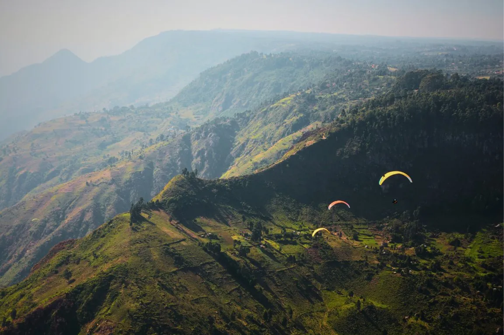
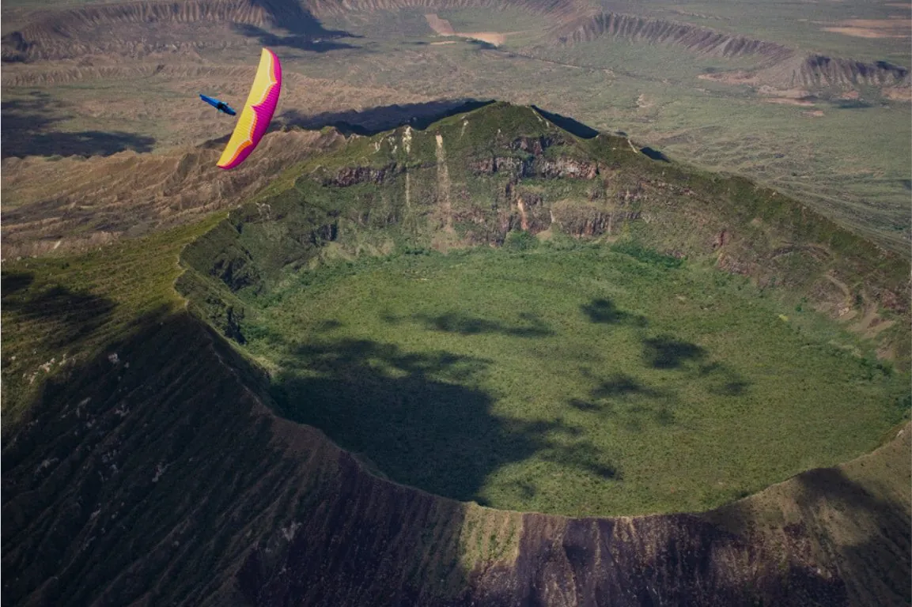
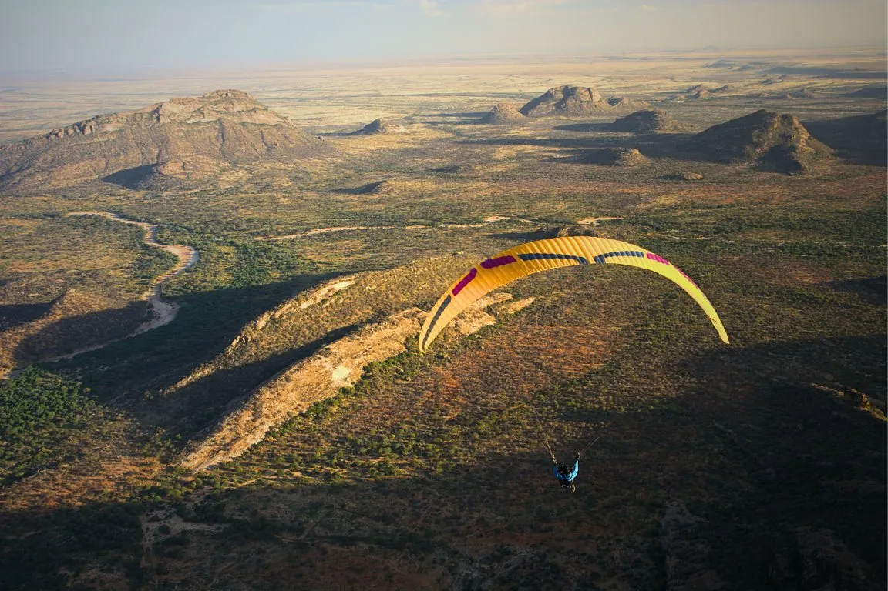
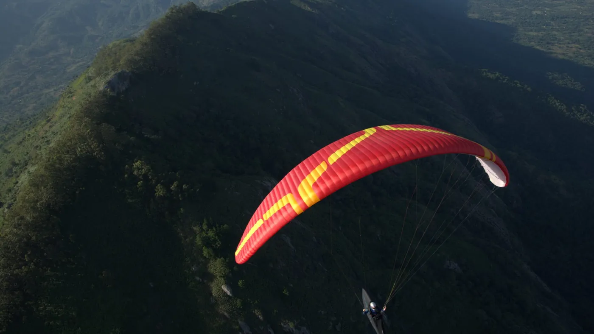
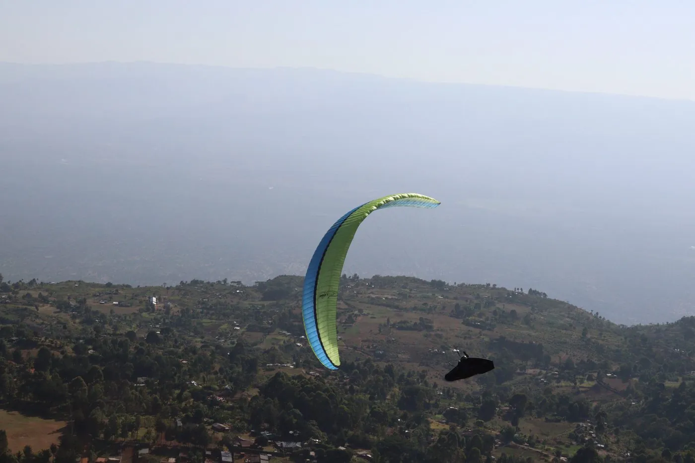
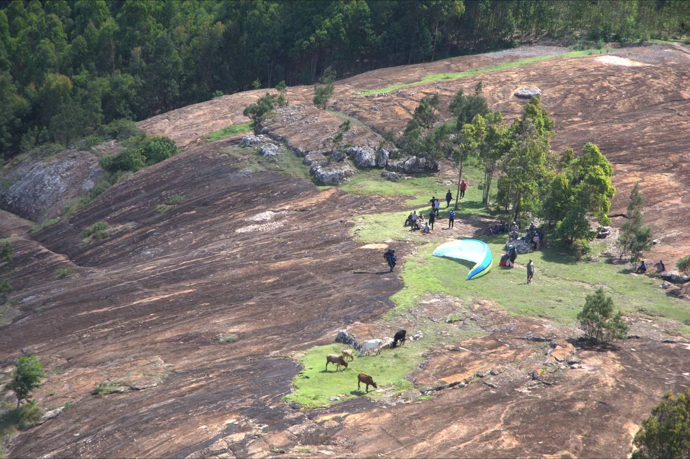
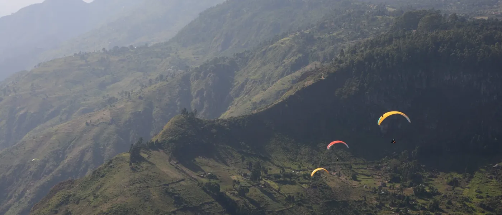
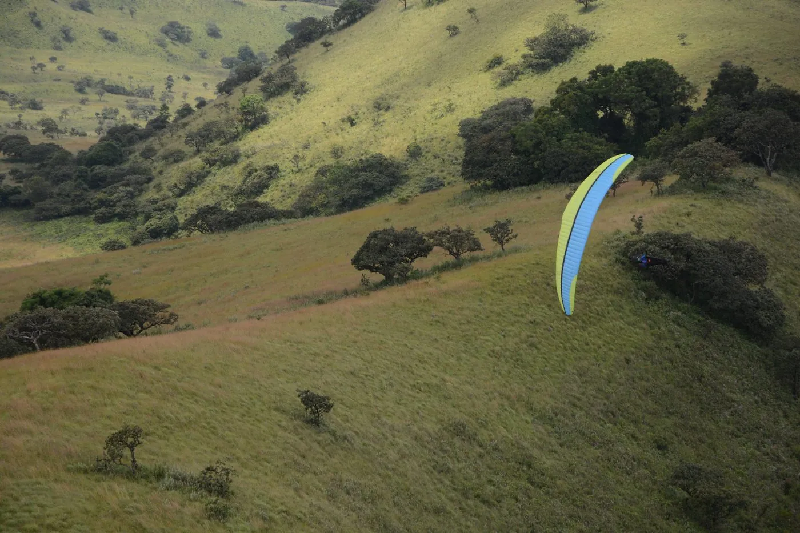
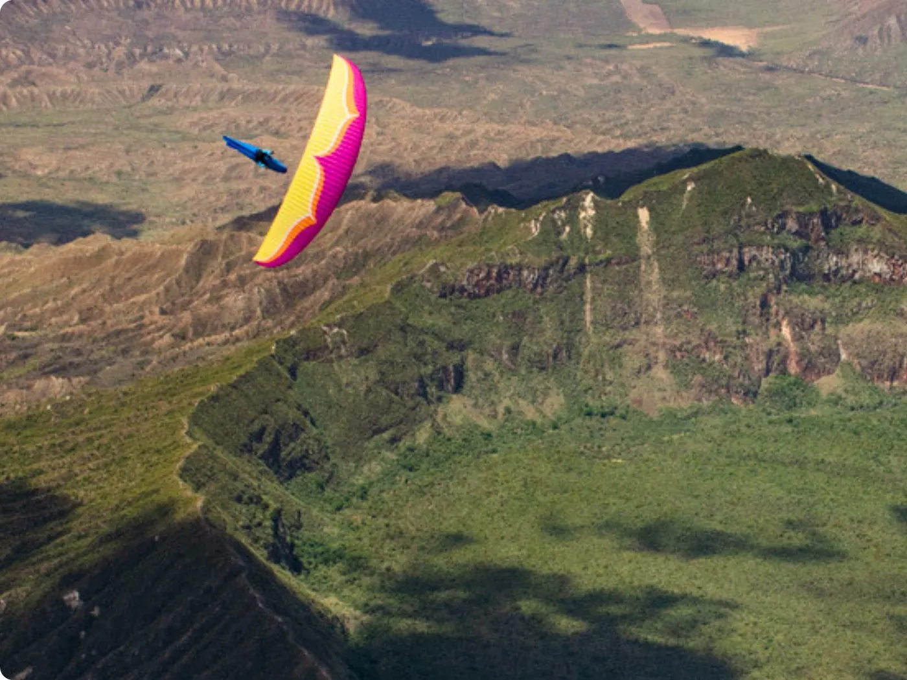

01
Kenya Tour 1
to 2027
Starting fromUS$2,100
Hold a place
Fly where humankind first walked. Rift Valley's endless skies await.
Glide Over Lands Where Humanity Took Its First Steps
launch from the lush green takeoffs in Kerio,
chase thermals over the flatlands,
and set your sights on the distant shores of Lake Naivasha.
4 to 6 m/s at the midday peaks,
December to March.
Globally known as a hotbed of archaeological discoveries contributing to the story of human evolution, Kenya offers much more than just world class safaris, Flying a paraglider in cradle of humankind allows you to soar over majestic landscapes with rich culture and awe inspiring scenery, Chase the World Speed Records in Kerio Valley or endless adventures while crossing the equator from above. This tropical paradise delivers like no other flying destination known to humankind
We take to the air from the heart of the Great Rift Valley with direct access from our home base, logistical arrangements are seamless and the adventure takes you into the very fabric of the Kenyan wilderness, as you
The itinerary is designed with ample flexibility, built around the best flying windows and integrated with authentic cultural experiences for when your feet are back on the ground.
The variometer readings vary from 1-2 m/s (weak, early morning/late afternoon) to 4-6 m/s (strong, midday peaks), with rare surges to 6-7 m/s. Variations include narrow, turbulent cores and wide, smooth ones as well, types range from classic bubble thermals to dynamic triggers depending on the location of flight
The weather in Kenya is determined by its tropical location and the oscillating effects of the Inter-tropical Convergence Zone (ITCZ), which annually travels back and forth across equatorial Africa, providing Kenya with a bimodal annual rainfall pattern. Flying season peaks in this equatorial paradise from December to March, Ideal for joining our Kenya tour.
Paragliding Atlas offers a tailored paragliding cross-country adventure based on the intimate local knowledge that allows our lead pilots: the founding team, to consistently find the best lines, unlock remote landing zones, and safely share the skies of this unparalleled landscape.
Our expertise in East African flying has been accumulated over long years of exploring the region’s weather patterns and hidden gems. Our handpicked team of experienced local and international pilots have logged countless airtime over the savannah, giving us an industry-leading opportunity to fly in conditions that range from gentle soaring to potentially epic world record breaking XC flights.
We oversee every step of our ground crew logistics and meet the very highest safety standards. Our team's Kenyan roots and ability to bridge the gap between global flying standards and local realities allows us to run every aspect of the operation smoothly, from retrieve drives to campsite coordination.
Our lead guides also have extensive experience in conducting retrieves from remote locations. We have detailed flight plans and multiple communication systems in place to ensure a swift pickup, no matter where the sky takes you. While we can’t control the weather, we can guarantee that you will be in the safest possible hands both in the air and on the ground should the unexpected happen.
We don’t see our clients as clients, we see them as friends and fellow dreamers. Pilots, who, like us, have made exploring new horizons a priority. That means we’ll leave no thermal unchecked in our quest to help you achieve a personal best or simply experience the flight of a lifetime
We know how it feels to Touch The Sky With Glory and It’s our dream to be able to share that with you

From the Elgeyo escarpment at Kerio in the north to the Chyulu Hills in the south, the scroll flies the six sites in order, 451 km end to end. Or take the controls and go where you like.
0.72°N · 35.65°E
The base for the tour, and the site where the world speed records are chased.
0.90°S · 36.30°E
Flying over the floor of the Great Rift, the geological scar that runs the length of the country.
158°T · 194 km from Kerio Valley
0.91°S · 36.45°E
A dormant stratovolcano with an intact crater rim, and one of the more photographed flights of the trip.
094°T · 17 km from Rift Valley NP
0.93°S · 36.58°E
An escarpment site on the eastern wall of the Rift, north west of Nairobi.
099°T · 15 km from Mount Longonot
1.52°S · 37.26°E
Rolling hills south east of Nairobi, and a change of character from the Rift walls.
131°T · 100 km from Kijabe Hill
2.68°S · 37.88°E
A young volcanic range between Tsavo and Amboseli, with Kilimanjaro on the horizon.
152°T · 146 km from Machakos Hills
The ground is open terrain data (AWS Terrain Tiles, Mapzen Terrarium, from SRTM and other open sources), a coarse layer for the whole Rift and a finer one over each site, drawn live as relief, flown by the scroll or moved by hand. The sites are the six of the tour, the launches are read from the owner's own tracklogs and the towns are placed from GeoNames (CC BY 4.0); the parks, peoples, prehistoric sites and landmarks along the way are placed by hand at the centre of each area, with a few lines each from published sources; the border is Natural Earth's. The flights drawn are the owner's, scored by the XContest rules: the distance is the scored route, the dashed line is that route, and the average speed is the scored distance over the time in the air. The figures are Noto Emoji (Google, Apache 2.0): they stand on ground placed by hand near each park, lake or town, in view at any distance, for the animals and people of a place, not for sightings.
Each runs 12 days from Kerio Valley.
to 2027
Starting fromUS$2,100
Hold a placeto 2027
Starting fromUS$2,100
Hold a placeHold a place sends an enquiry for that departure.
[to supply]








Nikolay Yotov of Skynomad takes the show to Africa for the first time, on flying in Kenya ahead of the pre World Cup held there. It covers what the sites are actually like and what it means to share that airspace with the wildlife below.
The six that come up every time. If yours is not here, ask it on the call.
This is an XC adventure tour for autonomous pilots. The minimum is being able to manage your own takeoffs and outlandings, with strong thermalling and ridge soaring skills recommended. An SIV course is highly desirable for handling collapses and turbulence.
Fitness: good condition for hikes to launch at moderate elevation, gear handling, and four to six hour active flying days in heat. You should be able to trek uneven terrain with a 10 to 15 kg pack.
We provide certified rental wings only, for a fixed fee on request, and that is first come first served, so tell us in good time. Group safety items including first aid and retrieve support are covered.
You bring your own EN or LTF certified wing, harness, reserve, helmet and vario or GPS. Hiking boots and thermal layers are recommended.
No, there are no dedicated one to one guides on this tour. Pilots are led by one or two expert instructors at a maximum ratio of one to three. Personalised XC guidance, weather briefings and retrieve help are provided to the group, focused on collective safety and maximising flights.
The base price covers local transport by 4WD van, guiding, park entry for flying activities, takeoff fees, and Paragliding Association of Kenya membership. Transfers from the airport to the meetup point in Nairobi can be arranged on request.
Travel insurance covering paragliding at altitudes up to 4,000m. It must include helicopter rescue for retrieves from remote regions, and medical evacuation and treatment covering local hospitals plus international repatriation.
Standard travel insurance often excludes adventure sports, so read the wording rather than assuming.
The deposit is not refunded, and if you cancel there is a termination fee that on a trip like this is usually most of the price, because permits, guiding and local arrangements are committed months ahead. It is calculated as the price less what we save and less anything we recover by reselling your place, and we will show you the working. The balance is due 120 days before departure. This is exactly why we push trip cancellation insurance so hard. Full detail in the booking terms.
We would rather you read this and decide it is not for you than arrive and find that out.
Explore the Cradle is built for independent pilots with strong glider handling and an appetite for the unfamiliar. We put flight safety first, because that is what keeps the fun factor intact.
Every flight is a good flight, but chasing airtime comes with bumpy air, variable thermal strength and conditions more demanding than you expected. That is part of it. Come willing to push your limits and you leave with a renewed understanding of flying in new terrain.
How a day runs
Your guide proposes the day's plan to maximise flying, and briefs you on the forecast, the site and the conditions. He suggests cross country directions and where a retrieve is realistic.
He launches first to check the air, or last to help with an awkward takeoff.
We fly the route together, or improvise over the radio when the day has other ideas. Under moderate easterlies, waiting for each other in the air is often simply not possible.
You decide where, and you land on your own. Kenya's generous conditions produce long flights, and a long flight means a long retrieve.
After you land, you are the one who activates and directs the retrieve driver, because the others may still be in the air.
For pilots going out there under their own steam rather than on our tour. None of it is specific to us, and all of it is worth reading before you book anything, with anyone.
Paragliding is still new across much of the continent, and how visiting pilots behave shapes what the next ones are allowed to do. This is distilled from thirteen years of Nikolay Yotov's exploration in Ethiopia and Kenya. He is also the guest on the Kenya episode, if you would rather hear it in his own words.
You may be seen as progress, as wealth, or with suspicion: spying, drones, something military. None of that is unreasonable given the history. Read up on the communities, the security picture and the recent past of anywhere you are heading before you get there.
Last year, we got arrested by 100 people with spears and stones.
Be open, enthusiastic and positive, and greet everyone, including the unsmiling ones. Ask locally about security, wild animals and access, because that knowledge is not in any guidebook. Explain your plan clearly: misunderstandings about where you intend to take off are the single most common problem.
Hiring porters is usually welcome. In some communities men will not take portering work, and offering a guiding or security role instead is the respectful move rather than pressing the point.
Agree a price in advance, even when someone waves it off. Numbers get misheard, and 15, 50 and 500 are easy to confuse in a second language on a windy hillside.
Tip 20 to 50 per cent for good work, and nothing extra for a rip off. Fairness runs both ways. Pay for the things you cannot see, like a path an ancestor cut or the fact that nothing with teeth came near you. Hire from the community closest to the site, or you create jealousy you will not be around to resolve.
Giving cash directly tends to make things worse for the pilot behind you. Share food or buy someone a meal instead. Saying plainly that it would not be fair to give to one person and not the rest is usually understood and accepted.
Better still, give work as a porter or guide, or donate to a local organisation. Avoid handing out your phone number or email, because it turns into requests for money later.
Wherever you land, some guy with motorbike comes and offers you lift. We want people to benefit from this, to earn some money from this.
Avoid schools, markets and crowds. Land somewhere remote but reachable by a vehicle. Pack fast with a quick pack sack, then deal with yourself and send your location; repack properly later.
People will arrive, and quickly. Greet the children with enthusiasm, find the elders or the leader, and ask them to help keep a clear space. Fly with live tracking and a driver you trust.
The motorbike crashed the lady. And then who is guilty? The paragliding pilot is guilty.
In remote areas you will camp or stay in somebody's house. Take your shoes off, wash your feet, compliment the food, and follow your host's lead on who it is appropriate to address. Pay discreetly, often to the woman running the household, and expect around half the price of a standard hotel.
Public transport is crowded and good fun, and your glider bag may double the fare, which is fair. Hitching, offer close to the bus fare and do not haggle below it; going lower is taken as an insult, not a bargain. A hired driver who negotiates, handles gear, keeps crowds back and will drive at night to fetch you is worth 50 to 100 dollars at the end of the trip. Avoid driving at night yourself. If you land a long way out, sleep where you landed.
The old rule is that it is better to say sorry than to ask permission, and paragliding is not explicitly illegal where the law does not describe it at all. That logic runs out in tense regions, where being arrested is a real outcome and official permission saves a great deal of time.
Kenya is the easy case. The tourism sector is used to foreigners and no special permits are needed for what we do on this tour.
There are few enough of us flying here that you are not an anonymous tourist. You are the paraglider pilot that community has met, and possibly the only one they will meet this year. What you do sets the terms for everyone who comes next.
Nairobi
Founded 1899, elevation 1,795m.
57.7 million
7th most populous in Africa, 27th globally. Area 569,140 km².
Kenyan Shilling
KES. Cash is used widely, ATMs are common in big towns only, and Mpesa is the preferred digital wallet.
Swahili and English
Kenya has over 60 further ethnic languages.
Check before you travel
Requirements depend on your own nationality.
240 volts, 50 Hertz
Plug type G, the UK socket.
Terrain runs from 1,000 to 2,000m. It can be hot in the lowlands and cold at height, so pack for both. Six items are marked essential. Do not travel without them.
Takeoffs sit between 1,000 and 2,000m, and you can expect to climb to 4,000m, where it is cold.
Kenyan conditions are stronger than most home sites. Bring gear you trust.
Helicopter rescue and good healthcare are both available.
The paperwork is the part you cannot buy locally on the morning you need it.
Thorns, sun and mosquitoes at the bottom, cold at the top. These are the ones people forget, the ordinary clothes for twelve days go without saying.
Conditions here are stronger than most home sites. Bring gear you trust.
The small things that matter once you are away from the van.
No mandatory vaccines for travellers from Europe or America. Local food can upset tender Western stomachs.
Ticking is saved on this device, so you can come back to it the night before you fly. Nothing here is sent anywhere.
Ready To Touch The Sky With Glory?
Whether you're a 10 hour pilot eyeing your first 50 or a longtime sky veteran chasing your next world record, we specialize in turning ambition into airtime. This relaxed no-expectations intro call helps you cut through the unknowns with straight talk.
We'll break down: